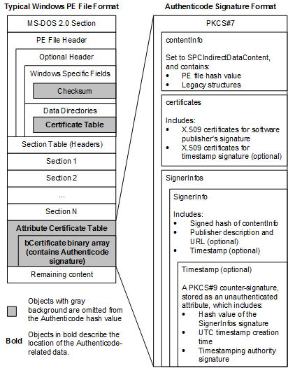

简介
PE文件数字签名使用的是 Authenticode 数字签名格式，它用来验证二进制程序的来源和完整性。
基于公开密匙加密标准 PKCS #7 来签名数据，并使用 X.509 证书来关联二进制程序与其发布者。
关于在PE文件中的 Authenticode 格式签名，微软给出了详细的解释，下载链接如下：
http://download.microsoft.com/download/9/c/5/9c5b2167-8017-4bae-9fde-d599bac8184a/Authenticode_PE.docx
签名的位置
在PE文件数据目录表中，存储着签名信息的偏移地址和大小，如下图所示

灰色背景的部分，不参与签名的hash计算。粗体的部分，就是签名的相关内容。
签名的格式
提取出来的签名信息，如下结构体所示，相关信息都在 Wintrust.h 头文件中定义
1 | typedef struct _WIN_CERTIFICATE { |
wRevision 签名证书版本号，内容如下所示
| Value | Name | Notes |
|---|---|---|
| 0x0100 | WIN_CERT_REVISION_1_0 | Version 1 is the legacy version of WIN_CERTIFICATE. It is supported only for verifying legacy Authenticode signatures. |
| 0x0200 | WIN_CERT_REVISION_2_0 | Version 2 is the current version of WIN_CERTIFICATE. |
wCertificateType 签名证书类型，这里值为 0x0002 表示 Authenticode signatures 类型
| Value | Name | Notes |
|---|---|---|
| 0x0001 | WIN_CERT_TYPE_X509 | bCertificate contains an X.509 Certificate |
| 0x0002 | WIN_CERT_TYPE_PKCS_SIGNED_DATA | bCertificate contains a PKCS SignedData structure |
| 0x0003 | WIN_CERT_TYPE_RESERVED_1 | Reserved |
| 0x0004 | WIN_CERT_TYPE_TS_STACK_SIGNED | Terminal Server Protocol Stack Certificate signing |
bCertificate[ANYSIZE_ARRAY] 签名证书的二进制数据，使用的是 ASN.1 语法 BER 编码格式。
签名的验证
在应用层可以使用 Wintrust.lib 库中的 WinVerifyTrust 函数来验证签名的信息
1 | LONG WINAPI WinVerifyTrust( |
经过测试，在使用 WinVerifyTrust 验证签名时，偶尔会出现响应特别慢的情况。假如我们在驱动中
做进程签名拦截，借助于应用层验证签名时，就会造成系统卡顿现象。或者使用 openssl 库来验证签名，
可以避免卡顿。
另一种方案就是直接在驱动中验证，自行实现签名的验证代码，可以加快检测速度，但是显然这种方案工作量
特别庞大。经过研究发现 commonName 信息在签名二进制数据中是以 UTF8 格式明文存储的，所以可以采取
只验证 commonName 信息是否在黑名单中，而不验证整个证书链是否有效的简化方案。
签名的提取
在驱动中提取签名二进制数据信息，相关结构体的定义如下，我们不关心的成员就不再详细定义
1 | typedef struct _DOS_HEADER { |
提取签名信息的函数如下，假定参数的路径为 \\??\\C:\Windows\System32\calc.exe 这种格式
1 | BOOLEAN CheckSignProcess(IN PWCHAR Path) |